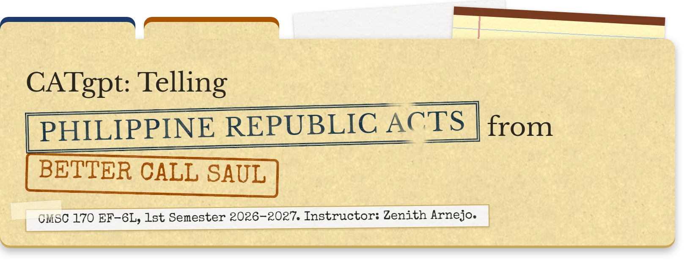

CMSC 170 EF-6L, 1st Semester 2026-2027. Instructor: Zenith Arnejo.
Group members:
Links:
Given two datasets, Republic Acts with Summaries and the episode transcripts of Better Call Saul, we build a binary text classifier that tells whether a piece of text it has never seen comes from a Philippine Republic Act (RA) or from a Better Call Saul (BCS) episode.
Republic Acts are formal government documents, while the transcripts are informal TV dialogue. We want to measure how different the two kinds of text are, and to compare how three machine learning methods do at classifying unseen text, in both accuracy and speed. We also look at how changing each method's parameters, like the smoothing factor in Naive Bayes or k in KNN, changes its results.
The TV show transcripts are used only for natural language processing research. Under Section 185 of Republic Act No. 8293 (the Intellectual Property Code of the Philippines), using copyrighted works for research and scholarship is fair use. All rights to the original works stay with their copyright holders.
| Better Call Saul | Republic Acts | |
|---|---|---|
| 10-token data made | 24,111 | 1,689,912 |
| Data used | 24,111 (all) | 24,111 (the first ones, acts from 1946-1947) |
| Training data | 19,288 | 19,288 |
| Test data | 4,823 | 4,823 |
The RA data are too many files for GitHub, so they are not in the repository. The README shows how to make them from RA/RA_split.
We compare Naive Bayes, K-Nearest Neighbors (KNN) and the Perceptron. All three use the same bag of words for each data point, so they solve the same task with the same input. We wrote every method ourselves in Python, using only the standard library. Each method is a Python class in its own file in the scripts folder.
How it works: Naive Bayes learns how likely each token is to appear in RA and in BCS data. It then classifies a new data point by which class most likely produced its tokens.
How we implemented it: We follow the CMSC 170 laboratory module. The model keeps the token counts of all RA training data and of all BCS training data. The probability of a token given a class uses add-k (Laplace) smoothing:
P(token | class) = (count of the token in the class + k) / (total tokens in the class + k × vocabulary size)
Multiplying many small probabilities made our scores go to 0 in Milestone 2, so instead we add up their logs, based on Jurafsky and Martin. The data point goes to the class with the higher log score. Tokens that never appeared in training are skipped.
How it works: KNN compares a new data point to every training data point and labels it by the majority vote of the k closest ones. Each token in the vocabulary is one dimension, and the distance between two data points is the Minkowski distance with exponent p (p = 1 is Manhattan distance, p = 2 is Euclidean distance).
How we implemented it: In Milestone 2, KNN turned every bag of words into a point with one number for every token in the vocabulary. With 38,576 training data and 16,700 tokens in the vocabulary, that is about 644 million numbers, which was too slow to finish. The new version keeps each bag as a dictionary and keeps an index of which training data contain each token. It only computes the full distance for the training data that share a token with the test data point. For the rest, the distance only depends on the size of each bag, so we use a list sorted by size. The distances are exactly the same as before.
How it works: The Perceptron learns a weight for each token and predicts RA if the weighted sum is positive. It adjusts the weights whenever it makes a mistake.
How we implemented it: We follow the same steps as in our laboratory exercise. The two classes become desired outputs of -1 (BCS) and 1 (RA). The model computes v = sum(wi × xi) + b and outputs 1 if v > 0, and -1 otherwise. When the output y does not match the desired output d, it updates each weight using w(n+1) = w(n) + r(d - y)x, and the bias in the same way. Weights are stored in a dictionary by token, since most tokens do not appear in a given data point, and a token with no weight yet counts as 0. The training data is shuffled every epoch with a fixed seed, so the classes are mixed and the results repeat. Training stops when an epoch has no mistakes or after 100 epochs, since the data might not be linearly separable.
We read the files in sorted order and use the first 80% of each class for training and the last 20% for testing. That is 19,288 training and 4,823 test data per class, or 38,576 and 9,646 in total. We only use one split because our instructor pointed out that the split ratio can affect KNN. Since the split is not shuffled, the test data mostly come from different episodes and acts than the training data. The BCS test data are from the last 13 episodes in alphabetical order (Something Stupid to Witness), and the RA test data are from Republic Acts No. 170 to 180 (1947). Only one episode (Something Stupid) and one act (No. 170) have data in both training and testing.
All three methods use the same data and the same preprocessing. The Perceptron shuffles its training data with seed 170, so we get the same results every run. Only the times change.
| Method | Parameter | Values tested |
|---|---|---|
| Naive Bayes | Smoothing factor k (Laplace / add-k) | 1, 0.5, 0.1 |
| Perceptron | Learning rate r | 0.01, 0.1, 0.5 |
| Perceptron | Starting bias | 0, 1, -1 |
| Perceptron | Maximum epochs | 100 |
| KNN | k, distance exponent p | k = 3, 5, 7, 9, 11, 13, 15; p = 1, 2 |
We wrote all the metrics ourselves in scripts/metrics.py. RA is the positive class and BCS is the negative class.
| Predicted RA | Predicted BCS | |
|---|---|---|
| Actual RA | True Positive (TP) | False Negative (FN) |
| Actual BCS | False Positive (FP) | True Negative (TN) |
Precision and recall usually trade off: calling more data RA raises recall but lowers precision, and the other way around. F1 is the harmonic mean of the two, so it is only high when both are high.
We also report a baseline that always predicts RA. It still gets 100% recall and a 66.67% F1, so a method has to beat it to show that it learned anything.
All results come from running main.py once per setting on the 10-token data. FN is the number of RA data called BCS, and FP is the number of BCS data called RA, out of 4,823 each. Times are in seconds and change slightly between runs.
For each method, we picked the setting with the highest accuracy and F1.
| Accuracy | Precision | Recall | F1 | Training Time (s) | Classification Runtime (s) | |
|---|---|---|---|---|---|---|
| Always RA (baseline) | 50.00% | 50.00% | 100.00% | 66.67% | - | 0.001 |
| Naive Bayes, k = 1 | 98.76% | 98.80% | 98.71% | 98.76% | 0.346 | 0.171 |
| Perceptron, r = 0.01, bias 1 | 98.30% | 98.66% | 97.93% | 98.29% | 5.182 | 0.112 |
| KNN, k = 3, p = 2 | 81.10% | 99.15% | 62.73% | 76.84% | 0.511 | 115.150 |
| TP | FN | FP | TN | |
|---|---|---|---|---|
| Always RA (baseline) | 4,823 | 0 | 4,823 | 0 |
| Naive Bayes, k = 1 | 4,761 | 62 | 58 | 4,765 |
| Perceptron, r = 0.01, bias 1 | 4,723 | 100 | 64 | 4,759 |
| KNN, k = 3, p = 2 | 3,033 | 1,802 | 26 | 4,809 |
| Accuracy | Precision | Recall | F1 | FN | FP | Training Time (s) | Classification Runtime (s) | |
|---|---|---|---|---|---|---|---|---|
| Always RA (baseline) | 50.00% | 50.00% | 100.00% | 66.67% | 0 | 4,823 | - | 0.001 |
| Naive Bayes, k = 1 | 98.76% | 98.80% | 98.71% | 98.76% | 62 | 58 | 0.346 | 0.171 |
| Naive Bayes, k = 0.5 | 98.70% | 98.90% | 98.51% | 98.70% | 72 | 53 | 0.347 | 0.179 |
| Naive Bayes, k = 0.1 | 98.65% | 99.00% | 98.30% | 98.65% | 82 | 48 | 0.344 | 0.177 |
| Perceptron, r = 0.01, bias 0 | 97.97% | 98.43% | 97.49% | 97.96% | 121 | 75 | 3.906 | 0.110 |
| Perceptron, r = 0.01, bias 1 | 98.30% | 98.66% | 97.93% | 98.29% | 100 | 64 | 5.182 | 0.112 |
| Perceptron, r = 0.01, bias -1 | 98.15% | 98.68% | 97.62% | 98.14% | 115 | 63 | 4.415 | 0.114 |
| Perceptron, r = 0.1, bias 0 | 97.95% | 98.61% | 97.26% | 97.93% | 132 | 66 | 3.470 | 0.111 |
| Perceptron, r = 0.1, bias 1 | 98.08% | 98.68% | 97.47% | 98.07% | 122 | 63 | 3.448 | 0.111 |
| Perceptron, r = 0.1, bias -1 | 97.87% | 98.73% | 96.99% | 97.86% | 145 | 60 | 3.722 | 0.112 |
| Perceptron, r = 0.5, bias 0 | 98.24% | 98.68% | 97.78% | 98.23% | 107 | 63 | 4.140 | 0.110 |
| Perceptron, r = 0.5, bias 1 | 98.20% | 98.52% | 97.86% | 98.19% | 103 | 71 | 4.437 | 0.112 |
| Perceptron, r = 0.5, bias -1 | 97.82% | 98.86% | 96.77% | 97.80% | 156 | 54 | 4.570 | 0.114 |
| KNN, k = 3, p = 1 | 75.34% | 99.96% | 50.69% | 67.27% | 2,384 | 1 | 0.373 | 121.519 |
| KNN, k = 3, p = 2 | 81.10% | 99.15% | 62.73% | 76.84% | 1,802 | 26 | 0.511 | 115.150 |
| KNN, k = 5, p = 1 | 67.28% | 99.94% | 34.58% | 51.38% | 3,163 | 1 | 0.466 | 114.925 |
| KNN, k = 5, p = 2 | 75.46% | 99.08% | 51.40% | 67.68% | 2,350 | 23 | 0.495 | 124.785 |
| KNN, k = 11, p = 1 | 59.70% | 99.89% | 19.42% | 32.52% | 3,896 | 1 | 0.484 | 123.172 |
| KNN, k = 11, p = 2 | 69.82% | 98.78% | 40.14% | 57.09% | 2,894 | 24 | 0.466 | 122.169 |
The settings in bold are the best setting of each method.
(Figures will be added here.)
All three methods beat the Always RA baseline (50%). Naive Bayes (k = 1) had the highest accuracy (98.76%), recall (98.71%) and F1 (98.76%), and the shortest training time (0.346 s). The Perceptron (r = 0.01, bias 1) was second with 98.30% accuracy and had the fastest classification time (0.112 s), but the longest training time (5.182 s). KNN (k = 3, p = 2) had the lowest accuracy (81.10%) but the highest precision (99.15%), and it took about 115 seconds to classify, compared to less than 0.2 seconds for the other two.
All three smoothing values scored between 98.65% and 98.76%. k = 1 had the highest accuracy, recall and F1, while k = 0.1 had the highest precision (99.00%). As k got smaller, false negatives went up (62, 72, 82) and false positives went down (58, 53, 48).
Why: the two classes use very different tokens. Of the 16,700 distinct tokens in the training data, 12,112 appear in BCS and 7,573 in RA, so only 2,985 appear in both. Naive Bayes adds up the evidence from every token in a data point, so 10 tokens are usually enough. It is also fast, since training only counts tokens and classifying only looks up the tokens in the data point.
Every setting converged: it stopped at an epoch with no mistakes on the training data, between epochs 23 and 38 (out of at most 100). All nine settings scored between 97.82% and 98.30%, and r = 0.01 with bias 1 scored the highest (98.30% accuracy, 98.29% F1). Every setting made more false negatives (100 to 156) than false positives (54 to 75), so precision was higher than recall. Training took 3.4 to 5.2 seconds, the longest of the three methods.
Why:
Every setting had a precision above 98.7% but a recall of only 19.42% to 62.73%, so almost all of its mistakes were RA data classified as BCS (1,802 to 3,896 false negatives, but at most 26 false positives). p = 2 scored higher than p = 1 for every k, and accuracy went down as k went up: from 81.10% to 69.82% with p = 2, and from 75.34% to 59.70% with p = 1. Training took about 0.5 seconds, but classifying took 115 to 125 seconds.
Why:
All three methods can tell Republic Act data from Better Call Saul data much better than guessing, even with only 10 tokens. Naive Bayes did best overall, with 98.76% accuracy, and was also fast. The Perceptron was close behind at 98.30% and was the fastest to classify. KNN was the weakest at 81.10% and by far the slowest, mostly because of how it breaks ties between equally distant training data, which we are fixing next.